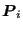
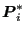
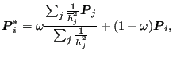
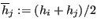
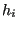
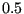

Next: END OF MAJOR LOOP. Up: Mesh refining procedure Previous: meshquality.f Contents
After smoothing a node its position
 
 |
(989) |
where    are the neighbors of
are the neighbors of  ,
,
 ) and
) and  is a relaxation factor taking the value of
is a relaxation factor taking the value of  is only smoothed if
the quality of its ball after smoothing has a smaller value (i.e. is better)
than before smoothing.
is only smoothed if
the quality of its ball after smoothing has a smaller value (i.e. is better)
than before smoothing.